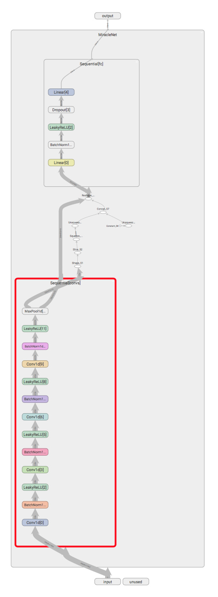

密苏里科技大学EMC Lab暑研 第十周
跌宕起伏而收获满满的一周。
本周伊始，在和张岭学长仔细讨论并规划了PCB电路板优化布局的方案之后，我开始了向深度强化学习的进一步迈进。针对Jim和Zurab教授提出的一些新的优化问题，我有针对性的编写了数份代码。但好景不长，由于这些代码有很多公共部分，而这些公共部分的代码需要不断地迭代更新，这无疑会造成巨大的麻烦以及潜在的错误可能。为了应对这个问题，我利用了Python类这个魔法棒将这些工程代码神奇的合为一体，每次只需在config表中改变一个参数即可。我和学长都对这个项目充满了期待，甚至觉得这是一个学科中里程碑式的进步。
同时，之前经过多周研讨的通过深度学习对Linux系统中受到干扰端口的特定项目终于拉开了帷幕。在Pommerenke教授的指导下，我和刘晓瑞学长迅速对数据的类型和协议达成了共识，迈出了项目的第一步。次日早上，学长将处理好的数据交付于我后，经过一天的奋力战斗，在天黑之前完成了整个代码框架的搭建。经过简单的几轮训练后，训练集和测试集上的准确率竟然都达到了惊人的100%。虽然再经过了之前贝贝组的“100%大乌龙”事件后我已经不敢轻易相信如此高的准确率，但是经过了仔细的分析后还是确认了这次的结果有很大可能性是真正的100%。首先是训练集和测试集表现一致，另外是与巨大的数据量相对的只有3类的分类数目，和学长对大量数据进行了优质的打标。这次成功我认为很大程度上得益于之前的不懈积累，因为绝大部分代码都直接源于之前辛苦构建的深度学习模板代码，而它们的高质量和稳定性也使我可以更加集中注意力于数据的处理和模型的构建而不必分心于其他功能性代码，模板代码提供的诸多方便的功能也使得开发进度大大加快。

更加令人兴奋不已的是，正在参加会议的Pommerenke教授将我的成果分享给了Google的相关部门研究人员之后，他们表示十分感兴趣并且希望将同样的方法应用到Android系统的电子噪音干扰的特定上，以加强其稳定性。Pommerenke教授也提出了一些新的要求，十分期待该项目的后续进展。
但几乎与此同时，在对PCB电路板优化布局项目的进一步思考中，我发现了一个令人无比沮丧的问题：我们的目标和方法存在着不可调和的冲突。深度强化学习虽然不需要预处理好的数据输入，但是每次计算reward时都需要调用相关仿真代码来判定这次的步骤对最终的阻抗是否产生了正向的影响，而这个过程需要耗费巨量的时间。从某种意义上来讲，这也是对数据的需求。而优化布局这个问题的目标则是用最少的仿真数来获得全局的最优值。为了训练好一个接受高维input的网络，我们需要对每个点都进行多次的训练，而当网络训练好的时候，我们早已找到了全局最优值，并且是以远高于之前方法的代价找到的。此时，神经网络已经没有意义了。
我当即和张岭学长进行了商讨，虽然很不甘心，但是还是决定放弃了使用深度强化学习来解决PCB电路板优化布局问题的念头，并把问题向Zurab教授做了如实的汇报。希望下周能够想出更好的解决办法。
另外就是论文了。本周终于在张岭和孙泽两位学长的指导下完成了初步的论文的修改工作。本周主要加入了孙泽学长负责的粒子仿真部分的介绍和公式推导，并且使用了Zotero这个软件成功的完成了文献的收集到引用一条龙的工作，掌握了公式的编号等问题的解决方法，总体来说还是收获颇丰的。
下周就要考GRE了，尽力准备吧！(๑´ ω｀๑)